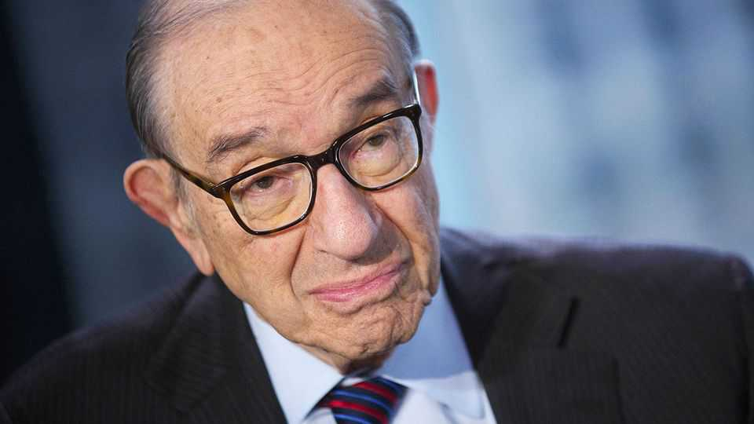

Alan Greenspan was a maestro of monetary policy
The former chairman of the Federal Reserve died on June 22nd, aged 100
June 25th 2026

THE NUMBERS were a guide, like the notes on sheet music. They were a guide in the 1930s, growing up in Washington Heights, at the northern tip of Manhattan, where Alan Greenspan tracked the statistics of his beloved New York Yankees. They were a guide in the 1990s, when as chairman of the Federal Reserve he presided over the then-longest American boom on record.
It was the numbers that led him to economics: the numbers he read in books on finance between sets, playing in a touring jazz band during the second world war. While the other musicians would sit and smoke a little reefer, he read up on American industry and J.P. Morgan, then picked up his saxophone and played that big-band music in Henry Jerome’s orchestra. He had taken classes at Juilliard, the conservatoire in New York City, and played alongside geniuses like Stan Getz. They played by feel. He trusted the notes on the page, as he trusted his numbers.
By 1945 he was studying at New York University in the era of John Maynard Keynes, whose analysis of the Depression changed economics. He admired Keynes’s analytical wizardry, but had no time for his sweeping vision. He kept to his data. As a consultant, his first job, he impressed clients with his knack for spotting turns in the business cycle—as in 1957, when growing steel inventories led him to intuit that a recession must be looming. It was all right there in the numbers.
There was more to life than data, though. He learned that from his friend Ayn Rand, a zealous, gut-level believer in individual freedom and the evils of state intervention. As the 1960s drew to a close, it was easy to see in America’s slowing growth rates and rising inflation the inevitable side-effects of government bloat. He was not a rabid partisan by nature. But as a jazz-age conservative in Vietnam-era America, infused with the libertarian spirit of Rand and her circle, he gravitated towards the Republican Party.
He had a way with people in high places. In 1975 he began squiring Barbara Walters, and he spent the last four decades of his life with Andrea Mitchell, also a television journalist. He fell in with Richard Nixon, too, who brought him onto his team as a campaign adviser. Nixon’s partisan rage turned him off, but he served happily under Gerald Ford as chairman of the Council of Economic Advisers: leading the band, now, stepping out from behind the music-stand. When Ronald Reagan ran for the presidency in 1980, he joined the campaign team.
It was Reagan who chose him for the job that would define his career. As chairman of the Fed, he would become the world’s most powerful economic figure, coaxing the massive, complicated machinery of the American economy to perform its best, to play its sweetest. His tenure began on a sour note. He was just two months on the job on October 19th 1987, “Black Monday”, when America’s stock markets lost more than 20% of their value in a single day. It was the worst one-day drop in the country’s history. In calm response, he jawboned banks into maintaining credit and pushed the administration to call for cuts to the budget deficit, which he reckoned would boost confidence.
He was fierce in defending the independence of the Fed; when the administration of President George H.W. Bush leaned on the central-banking system to do more to beat back the recession of the early 1990s, he had none of it. But independence did not mean that the chairman had to mind his own business. In the murky language known as Fedspeak, of which he became the most famous and fluent speaker, he would render his judgments on the plans of the president and Congress, never using one syllable when six would do. The American press proved a rapt audience.
The maestro’s control never seemed more complete than in the 1990s. In 1994 he joined Robert Rubin, Bill Clinton’s secretary of the treasury, and Larry Summers, a deputy secretary, to make up a trio of crisis-fighters: managing financial havoc in East Asia and Russia—and in American financial markets, when Long-Term Capital Management, a massive hedge fund, required a Fed-orchestrated bail-out. His Fed kept the American economy humming, speeding through an unprecedented boom. “If you want a simple model for predicting the unemployment rate in the United States over the next few years, here it is,” wrote Paul Krugman in 1997. “It will be what Greenspan wants it to be, plus or minus a random error reflecting the fact that he is not quite God.”
Finally, Mr Greenspan was playing by feel. He believed new technology was changing the way the economy worked. When Fed members worried that the economy was running too hot, he told them to be cool: the numbers had to be wrong. He let the boom run, counting on a productivity miracle to keep inflation in check. When rocketing stock prices threatened to create disharmony, he warned gently of “irrational exuberance”, while still believing the economy was more resilient than ever.
But then, somehow, it began to get away from him. By the turn of the millennium he feared that productivity growth, and the stock market boom it had brought about, was inflationary after all. When stocks crashed and recession struck, the economy did not jump at his utterances as it had before. A jobless recovery gave way to a dangerous-looking housing boom, which his rate rises failed to dent. Even so, he left the Fed to a chorus of plaudits, hailed as the man who could make the American economy sing.
He barely had time to publish his memoir before the global financial crisis hit. It shook his faith in deregulation. He defended his Fed: the low interest rates that perked up growth, its light regulatory touch, and the bail-outs it had constructed in the years before the crash. He blamed the Obama administration for holding back growth. Sour notes sounded, however. Had he really been such a maestro? Had he been good, or merely lucky, and then unlucky? If only the numbers could say, one way or another.■